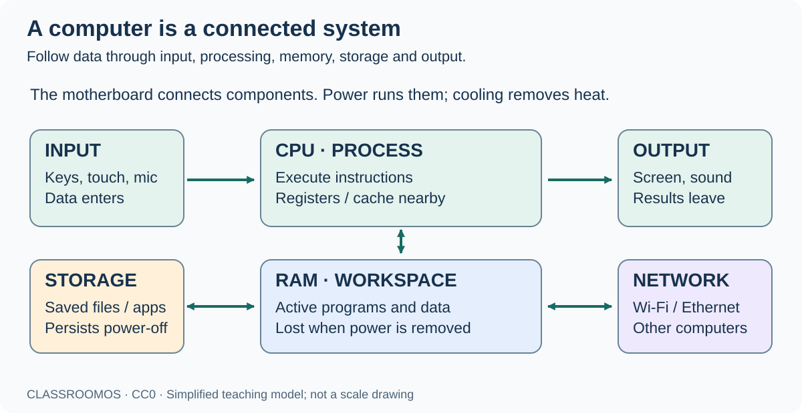
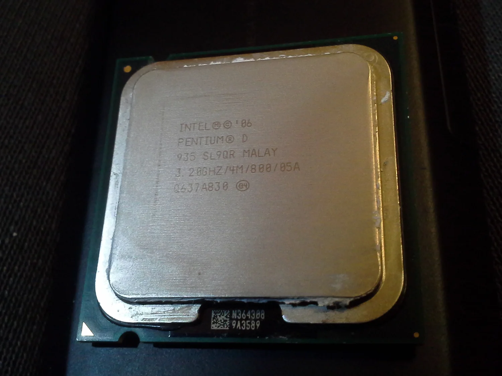
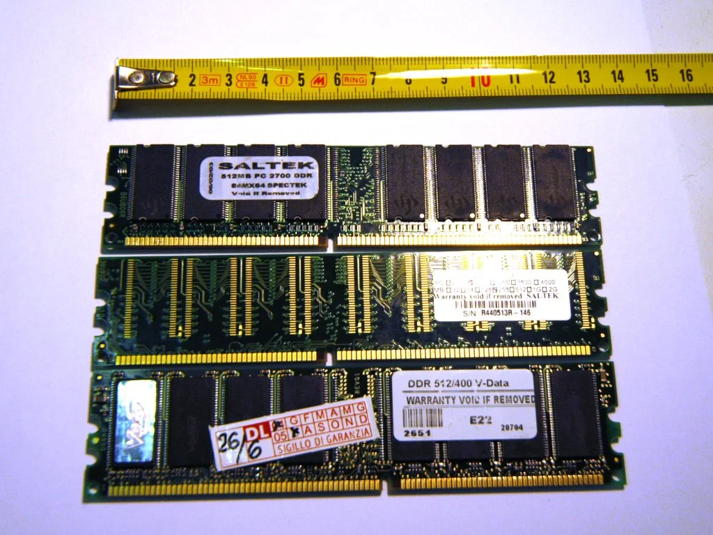
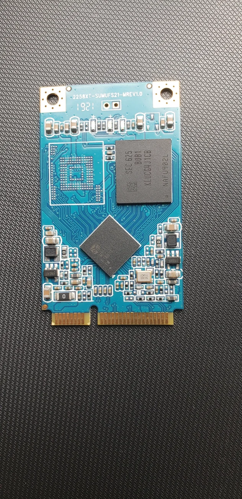
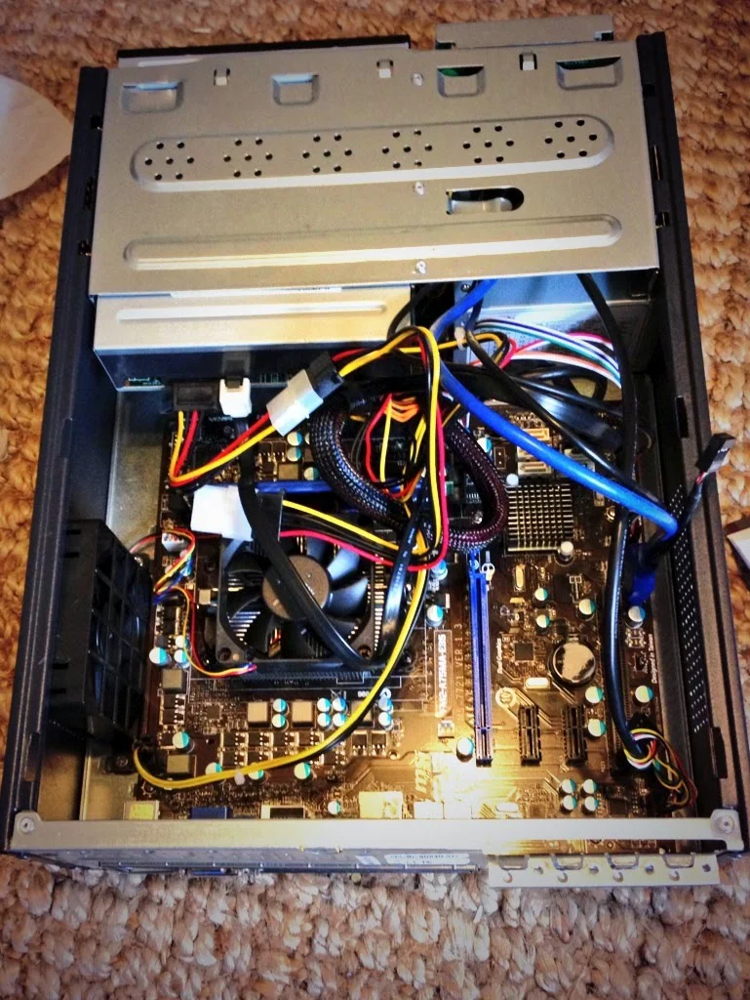
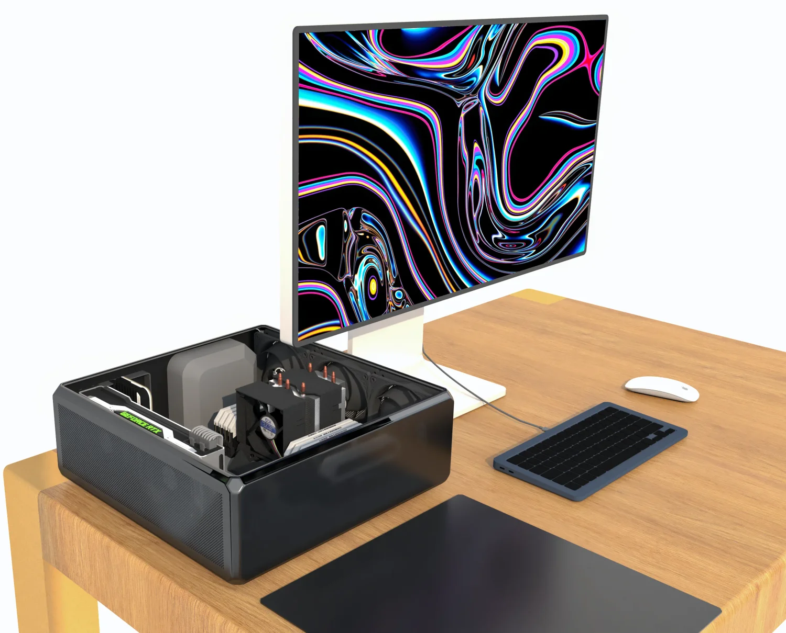
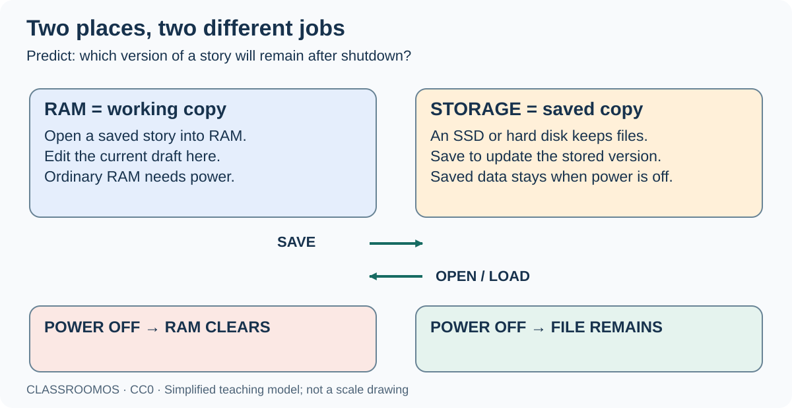
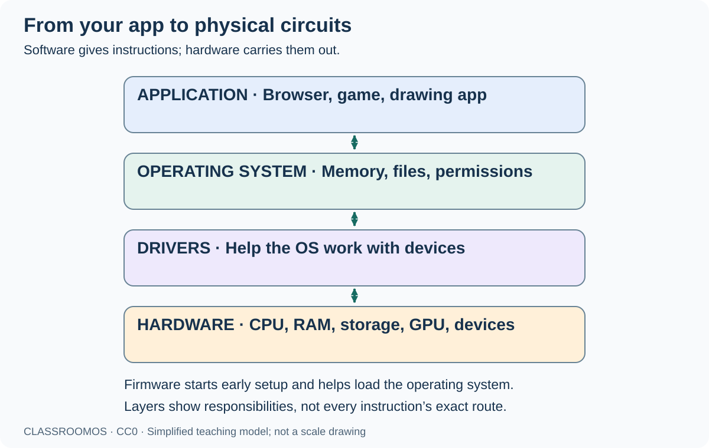
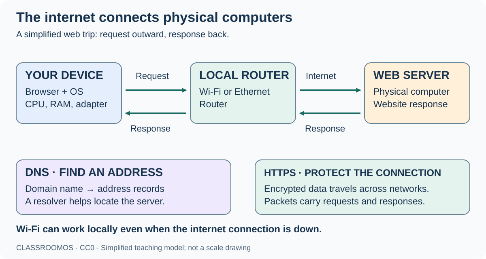

Computer Science pathway / Foundations
COMPUTER SCIENCE / FOUNDATIONS
Anatomy of a Computer
From a key press to a website: discover the physical parts, the instructions they follow, and the networks that connect them.
Grades 5–8 · Adaptable for younger learners · 60–75 minutes · No account or computer disassembly needed
01 / What makes a computer a computer?
A computer is a physical system that accepts input, stores and processes data according to instructions, and produces output. Laptops, phones, game consoles and many embedded devices are computers.
By the end, you can…
- Explain CPU, RAM, storage and GPU roles.
- Distinguish hardware, an operating system and an application.
- Trace data from a device to a web server and back.
- Use evidence to explain a simple computer problem.
Opening puzzle · 5 minutes
You type a story, save it, and shut down. Tomorrow the saved story is still there, but the app must open again. Which part remembered the story?
Discuss the explanation
Persistent storage kept the saved file. RAM held the working copy while the app ran. Unsaved changes may be lost unless an app has saved a recovery copy.

Look & explain: point to the path from a keyboard to a screen. Which part would keep a saved story after shutdown?
02 / Meet the hardware
Hardware means physical components. Select a part to explore its role. This is a functional map, not a scale drawing: layouts vary by device.
Hardware field guide · recognize the real parts
Select any image to enlarge it. Use the lightbox arrows to compare the figures. These examples include older components: modern devices may use different shapes or combine several functions on one chip.

_Pentium(R)_D_935_CPU.jpg){kind=link}








Compare & discuss: find a connector, a memory chip and a cooling device. Which images show a component, and which show a whole system?
CPU · Central processing unit
Executes program instructions: arithmetic, comparisons and control. It works with registers and caches, which hold small amounts of data close to the processor.
Kitchen analogy: A cook following recipe steps. A fast cook still needs ingredients and workspace.
CPU · Central processing unit
Executes program instructions: arithmetic, comparisons and control. It works with registers and caches, which hold small amounts of data close to the processor.
RAM · Random-access memory
Holds programs and data currently in use. Ordinary system RAM is volatile: its contents are lost when power is removed. Saving copies work to persistent storage.
Storage · SSD or hard disk
Keeps files, apps and the operating system when power is off. An SSD uses flash memory; a hard disk uses spinning magnetic platters. Storage capacity and RAM capacity are different.
GPU · Graphics processing unit
Performs many operations in parallel, including drawing graphics. GPUs also help with some scientific and AI tasks. A GPU may be integrated with the CPU and share RAM, or be a separate component.
Motherboard · Connections and coordination
The main circuit board connects components through sockets, traces and buses. Chips and controllers help components exchange data. In phones and some laptops, many functions share one chip.
Power & cooling · Energy in, heat out
A power supply or battery provides electrical energy. Heatsinks, fans or other cooling move heat away. Not every device has a fan.
Input / output · Communicating with people
Keyboards, microphones and sensors provide input. Screens, speakers and printers provide output. A touchscreen does both. Ports connect peripherals.
Network adapter · Connecting to a network
Wi-Fi or Ethernet hardware sends and receives data on a network. A router forwards packets between networks. A modem or other access device connects to an internet provider, depending on the service.
Analogy limit: computers do not understand recipes like people do. Circuits represent bits using physical states and execute encoded instructions. Data and instructions are represented using bits; eight bits make one byte.
Observe safely: identify visible ports, screen, keyboard and vents on a classroom device. Keep liquids away and vents clear. Only a teacher should demonstrate approved, unplugged equipment; never open a power supply or handle a battery.
Build lab / Assemble a working PC
Your brief: build a desktop with a training socket Alpha CPU, DDR4 memory, an M.2 SSD and a dedicated graphics card. Choose a part, select its destination inside the case, then choose how to install it. You can also drag parts onto destinations.
Model limits: this is a simplified practice build, not instructions for a particular real PC. Connector locations, compatibility, mounting hardware and cooling procedures vary; follow the actual manufacturers’ manuals with adult supervision.
Start by preparing a safe, unpowered workspace.
Parts & tools
Inside your case
Simplified top view · choose a labeled destination
Installation method
Build checklist & workshop notes
03 / RAM is workspace. Storage keeps the file.
Opening an app loads needed instructions and data from storage into RAM. The CPU accesses working data through a memory hierarchy that includes caches and RAM. Saving writes data to storage; it does not simply leave it in RAM.

Predict: save draft 1, write draft 2, then power off. Which draft can you reopen? Test your prediction below.
A tiny memory model
Predict what survives before pressing each button. This model has one document and ignores autosave, recovery files, caches and virtual memory.
RAM: empty
Storage: no saved file
Try writing, saving, powering off, and opening the file.
More does not always mean faster
More RAM can help when active programs need more workspace. More storage provides room for files. A faster CPU, GPU, storage device or network can help different tasks; no single specification measures every kind of performance. When RAM is scarce, an OS may move some data to storage, which is usually much slower than RAM.
04 / How instructions become action
Software is the programs and instructions a computer runs. A file can hold software, a photo, a song or other data; its meaning depends on how software interprets it.

- Application: a browser, game or drawing app performs a task for the user.
- Operating system: Windows, macOS, Linux, Android or iOS manages processes, memory, files, devices and permissions.
- Drivers: software helps the OS communicate with particular hardware. Many drivers are supplied with the OS.
- Hardware: the processor executes machine instructions and devices carry out input, output and storage operations.
At startup: firmware performs early setup and starts a boot process that loads the operating system from storage. Firmware is software stored on the device. The layer diagram above describes responsibilities; it is not a literal route followed by every instruction.
Trace a drawing
Stylus input → drawing app updates the picture → OS and drivers coordinate graphics → GPU helps render → screen displays pixels. Saving writes an encoded image file to storage.
Code becomes instructions
People often write in languages such as Python or JavaScript. Compilers, interpreters and runtimes help execute that code. The CPU ultimately executes machine instructions; it does not directly read English or a source-code page.
05 / What happens when you open a website?
The internet is a network of connected networks. The Web is one service using it, alongside email and other services. Wi-Fi links a device to a local network; being connected to Wi-Fi does not guarantee internet access.

Point & trace: show where your browser runs, where the website response comes from, and where a broken internet connection could interrupt the trip.
Follow a web request
A simplified first visit to an HTTPS website. Real systems cache data, reuse connections and request many files.
- Input and browser. You enter a URL. The browser is an application running on your device, using CPU time and RAM.
- Find an address with DNS. The browser or OS checks caches or asks a DNS resolver for records that help find the server address for the domain. DNS does not deliver the webpage itself.
- Travel across networks. Your network adapter sends data over Wi-Fi or Ethernet. A router forwards packets toward your internet provider and other networks. Different packets can take different routes.
- Connect securely and request. For HTTPS, the browser and server establish an encrypted connection and the browser sends an HTTP request. This simplified sequence leaves out protocol details.
- The server responds. A server processes the request and sends response data in packets. The server may use its own CPU, RAM, storage and other services.
- Build the page. Your device receives data. The browser interprets HTML and CSS, may run JavaScript, and requests more resources. CPU and GPU work help display the page; RAM holds working data.
- Save a local copy. Downloading and saving writes a file to your device’s storage. That local file may open offline; online features and additional remote resources may still need internet.
Where is “the cloud”?
Cloud services run on physical computers in data centers connected by networks. A cloud file uses someone else’s storage and software; a local copy may also exist on your device. Online-only files may be unavailable without a connection.
What does HTTPS protect?
HTTPS encrypts data in transit and helps authenticate the server for the domain. It does not guarantee that a site’s claims are true or that a download is safe. Share only information you are authorized to share.
06 / Become a computer detective
Partner mission · 10 minutes: draw a device and label CPU, RAM, storage, input, output and network connection. Add an OS and one app. Use arrows to trace opening, editing and saving a file, then requesting a website. Explain which steps need the internet.
| Observation | Question to investigate |
|---|---|
| A saved video will not fit. | How much free storage is available? More RAM does not add file space. |
| Many apps are open and switching is slow. | Is memory pressure high? Also check CPU and storage activity; slowness alone does not prove the cause. |
| A local drawing app works, but websites do not load. | Is the local network connected? Does the internet connection work? Is the issue limited to one site? |
| A game draws frames slowly. | Could graphics settings, CPU work, GPU load or heat be limiting it? Gather evidence before buying parts. |
Check your understanding
Exit ticket
Explain in four sentences: “I open a browser, visit a website, download an image and save it.” Include CPU, RAM, storage, OS and network. Then explain what would still work without internet.
Teacher plan, adaptations & answer guide
Timing: opening puzzle 5 min; component exploration 15; memory predictions 10; software trace 10; internet journey 10; partner mission and exit ticket 15. Extend with a classroom role-play: students act as input, CPU, RAM, storage, router and server, passing instruction and data cards.
Younger learners: focus on input → process → output, plus workspace versus saved storage. Older learners: investigate cache, virtual memory, integrated GPUs and network latency; distinguish bandwidth (data per time) from latency (delay).
Assessment: look for correct roles, a clear distinction between RAM and storage, an application/OS distinction, and a request-and-response path. Quiz answers: RAM; OS; local Wi-Fi can work without internet; server; storage. Have students explain corrections and retry.
Offline option: use the printed component descriptions and numbered internet sequence. Model RAM with a wipeable board and storage with a paper folder. The written activities require no student account.
Continue: Binary, Bits & Logic Gates · Operating Systems, Files & Terminal